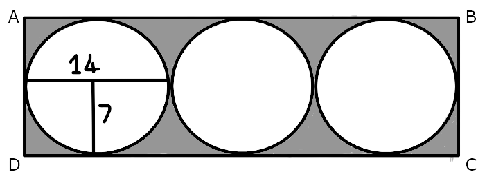

Answer :-

We come to know from the diagram that :-
1) The length of the diameter of 1 circle is equal to 14 cm.
2) The length of the radius of 1 circle is equal to 7 cm.
Therefore, we can say that :-
1)The breadth of the rectangle is equal to 14 cm as the diameter of one circle is equal to the breadth of the rectangle.
2)The length of the rectangle is equal to 42 cm as the diameter of all the 3 circles is equal to the length of the rectangle.
Now , since we know the dimensions of the rectangle and the circles , we can calculate the area of the shaded portion by using the formula :-
Area of the shaded portion = Area of the rectangle - Area of the 3 circles
Area of the shaded portion = (14 × 42) - (3 × ⫪ × r2)
Area of the shaded portion = 588 - (3 × 22/7 × 7 × 7)
Area of the shaded portion = 588 - 462
∴ Area of the shaded portion = 126 cm2